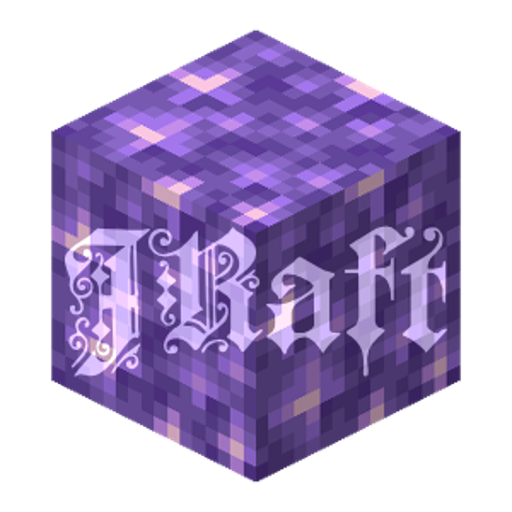

JRAFT
Minecraft 26.3 with the JRAFT mods. It installs and updates everything by itself.
DownloadPick your system below- Open the file you downloaded.
- The first time, sign in with your Microsoft account.
- That's it. Open it again whenever you want to play; it updates itself.